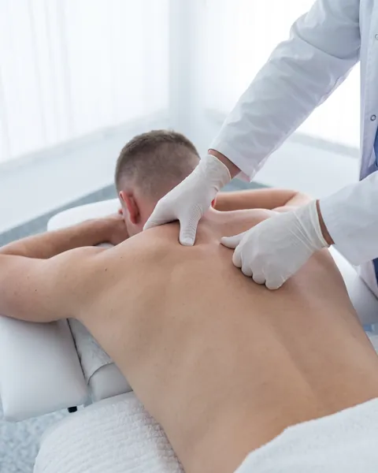
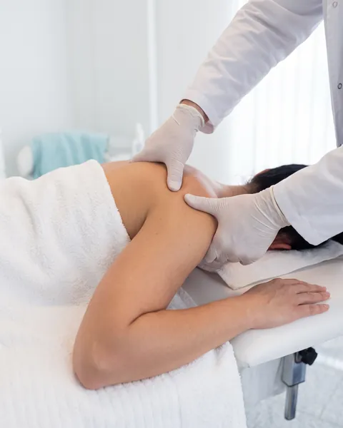
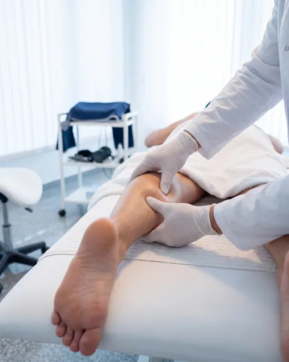
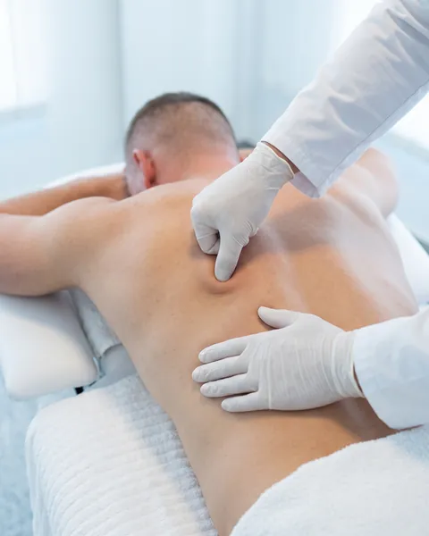
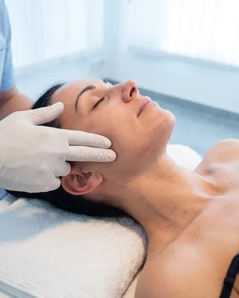
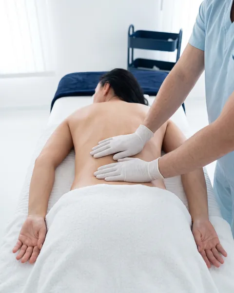
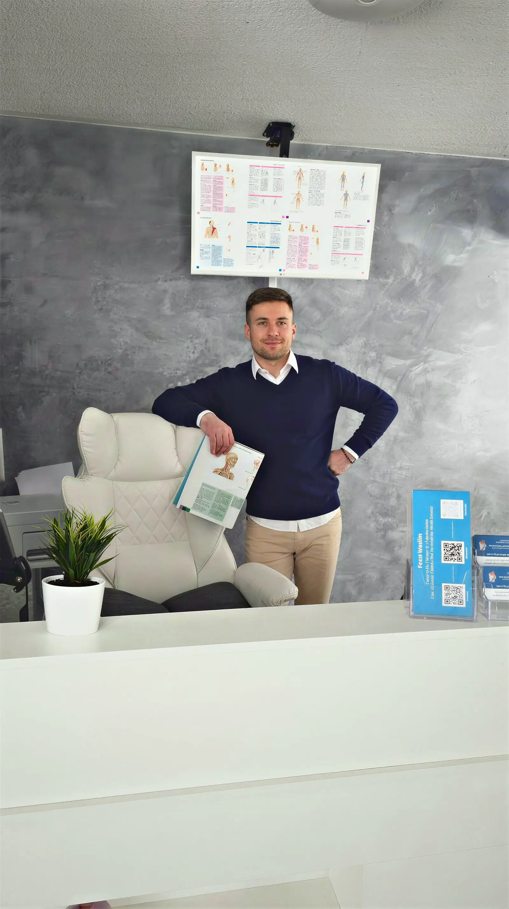

Schulter · Nacken · Rücken
80 €
- Gezielte Triggerpunktarbeit
- Schmerzlinderung im Fokusbereich
- Mehr Beweglichkeit

Faszien & Triggerpunktarbeit
Für Menschen mit anhaltenden Schmerzen und Verspannungen. Bei Druck, Ziehen, Stechen und verhärtetem Gewebe.
Öffnungszeiten
Zertifiziert
Faszientherapeut & Sporttherapeut
Anfahrt
Danzigerstr. 19
78549 Spaichingen
Bitte ein Handtuch mitbringen · Girocard oder bar
Behandlungsbereiche
Erkennst du dich in einem der Bereiche wieder, ist eine Behandlung für dich geeignet.
Chronische Rückenschmerzen, Nackenverspannungen, Zug im Kopfbereich

Eingeschränkte Schulterbeweglichkeit, Taubheit in Armen oder Händen

Verhärtete Waden und Oberschenkel, Fußsohlenschmerzen, Gesäßblockaden

Der Schmerz sitzt nicht dort, wo die Ursache liegt – ein Zeichen für aktive Triggerpunkte

Kieferverspannungen, Druck im Kopf, Schwindel durch Muskelverspannung

Dauerhaft angespannt, blockiert, innerer Druck – auch ohne klare Schmerzursache

Ich taste gezielt nach Verspannungen, Verhärtungen und Triggerpunkten – dort, wo der Schmerz entsteht, nicht wo er sich zeigt.
Präzise manuelle Techniken an tiefsitzenden Gewebeverdichtungen. Das kann intensiv sein – genau das unterscheidet es von klassischer Massage.
Nach einer kurzen Reaktionsphase (oft 1–2 Tage Muskelkater) berichten die meisten von weniger Schmerz und besserer Beweglichkeit.

Preise & Leistungen
Alle Preise inklusive Nachbetreuung und Tipps für zuhause.
80 €
100 €
65 €
Wichtig: Keine Entspannungsmassage, sondern gezielte Tiefengewebsarbeit. Gerade nach der ersten Behandlung sind Muskelkater, Druckempfindlichkeit oder blaue Flecken möglich – sie klingen meist nach wenigen Tagen ab.
Der Unterdruck aktiviert das Gewebe, regt die Durchblutung an und versorgt das Areal besser mit Sauerstoff und Nährstoffen. Eine kraftvolle Ergänzung zur Tiefengewebsarbeit.

Echte Stimmen
4,7
aus 196+ Bewertungen auf Google
FAQ
Klassische Massage arbeitet an der Oberfläche. Meine Arbeit setzt im tieferen Muskel- und Fasziengewebe an – dort, wo sich über längere Zeit verhärtete Strukturen entwickeln. Präzise Gewebearbeit, keine Entspannungsbehandlung.
Wir starten mit einem kurzen Gespräch zu Beschwerden, Vorerkrankungen und Zielen. Dann taste ich gezielt nach Druck, Verhärtung und Triggerpunkten. Die Behandlung dauert 30 bis 45 Minuten. Am Ende bekommst du Hinweise für die nächsten 24–48 Stunden und ggf. einfache Heimübungen.
Bei starken Verhärtungen kann sie intensiv sein. Den Druck passe ich kontrolliert an – sag jederzeit, wenn es zu viel wird. Danach ist eine muskelkaterähnliche Reaktion möglich, die meist nach 1–2 Tagen abklingt.
Das hängt von Alter, Beruf und Beschwerden ab. Jüngere Menschen: alle 2–4 Wochen. Bei chronischen oder berufsbedingten Beschwerden: alle 1–2 Wochen. Wir besprechen das nach der ersten Behandlung.
Bei akuten Entzündungen, Fieber, Blutgerinnungsstörungen, frischen Operationen, Krebserkrankungen, Rheuma oder Arthrose ist von Tiefengewebsarbeit abzuraten. Im Zweifel bitte vorher ärztlich abklären.
Ja. Die zertifizierten Online-Kurse richten sich an alle, die fachlich in die Faszienarbeit einsteigen möchten – zur Weiterbildung oder für den Schritt in die Selbstständigkeit.